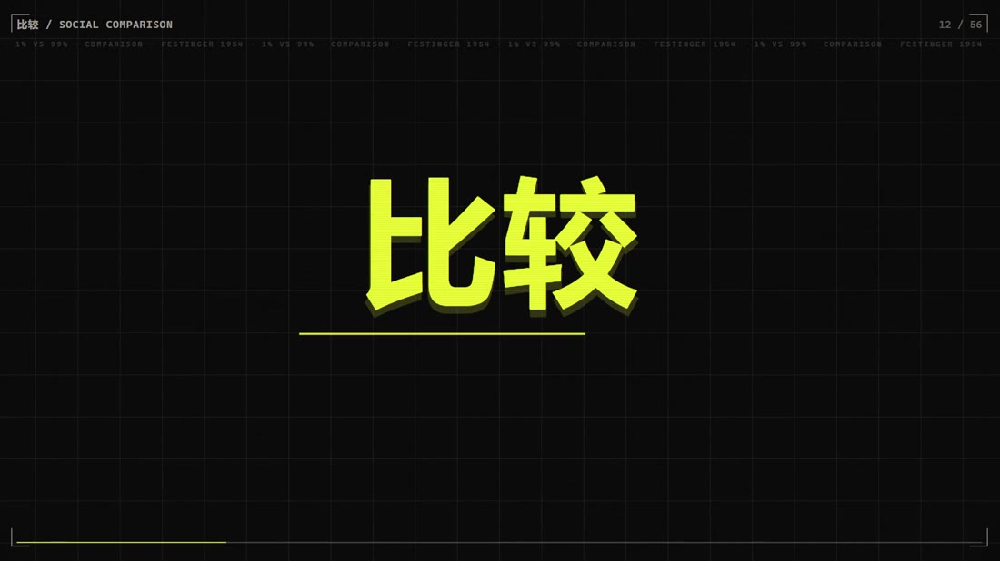

Invitation · 请柬一封
请进，随便逛
Jackson Jin · Portfolio 2027 · Eight Halls
我是金佳信。这八个厅里放的是三段实习和自己折腾了两年多的东西，千川素材、海外市场的成片、 用代码写的短片、几个能直接上手的工具，还有我自己做的小游戏。 每件都标了我负责哪一块，点进去就能看，不用装任何东西。
01 — The Halls
八个厅，八件事
每个厅只回答一个问题。想看我能不能干活，去一号厅；想看我审美和工程底子，去二号厅； 想看我能不能自己造东西，去五、六、七号厅。不想挨个逛，可以按数字键 1–8 直达。
41 件展品 · 8 个厅
按 1–8 直达
运营中枢
工作台、SOP、方法论。把每天的动作固化成别人也能接着干的流程。
影像放映
四部纯代码生成的短片，加一条十二片的 AIGC 合集。看镜头、节奏和卡点。
品牌出海
蓝色光标实习期的海外社媒成片、三语本地化，和一套能交接的交付清单。
增长投流
千川素材的规模化供给。过审率从 70% 抬到 82%，日耗十万的账户是怎么喂饱的。
AI 工具台
五个点开就能用的工具，不是截图。日历、脚本、合规、复盘、决策，各管一件事。
游戏实验室
2D、3D、卡牌各一款，全都自己写。再加一份游戏策划分析，说明我懂行。
建模工坊
一间能走进去的便利店。货架、冷柜、收银台全是代码搭的，能拿货能结账。
行业洞察
两份自己做的行业调研。医疗投放的合规边界，和海外短剧的七个市场。
02 — Crown Pieces
时间不多，先看这三件
一件证明我能把流程做成工具，一件证明我懂画面和节奏，一件证明我玩得动 AI 生成。 三件看下来，我大概是什么水平就有数了。
内容运营工作台 2.0
选题打分、内容日历、素材库、发布清单、数据复盘、爆款拆解、合规预检、周报导出，十一个模块。单文件、零依赖，双击就开，数据只存在你自己的浏览器里。

02 FILM-01影像 · 81 秒比较
81 秒 56 个镜头，把「别人都在赢」讲成一次情绪反转。所有切点都落在 0.352 + k×1.0846 这条公式上，音乐整首原样播完，画面一帧没靠素材库。
 03
FILM-05合集 · 12 条
03
FILM-05合集 · 12 条
AI 视频作品集
《中国龙》V3、《候》、《悟空》这些 AIGC 片子，加上品牌社媒和剪辑练习，一共十二条。抽卡、脸会飘、同一句描述换个镜头就漂移，这些坑我都趟过。
03 — Method
作品会过时，方法不会
这四十多件东西背后其实是同一套动作，把模糊的手感拆成参数，把参数写成能验收的东西。
做内容的判断力，
最终体现在「换个人也能做对」上。
PARAM / 01
参数化
把凭手感的环节变成能填的参数，字幕的字号坐标、镜头的切点时间、爆款的判断顺序。能写成数字的，就不靠记忆。
VERIFY / 02
可验收
每条片子自己一帧一帧看过，白底白字、错帧、字幕越界，模型不会替你发现。验收标准在我这边，不在生成端。
HANDOFF / 03
可交接
每件产出都留一份下一个人能直接用的东西，SOP、预设、工具，或者一条点开就看的片子。没有交接物，等于没做完。
04 — About
2027 届 · 教育技术学
我是金佳信，教育技术学 2027 届。现在在上海蓝色光标做海外社媒内容运营， 之前在七度做 AI 内容生产和千川素材，更早在平水日铸做文旅内容。 三段实习都在做同一件事，把内容生产里的不确定挪走一点。
- 上海蓝色光标（上海亿动传媒）· 海外社媒内容运营Segway、ROX 极石两个出海品牌，Insta / Facebook / YouTube 三平台短视频剪辑与包装，20+ 条成片，2 份团队 SOP
- 七度信息科技 · AI 内容生产运营千川素材规模化产出，人均日产能 7–9 → 15–18 条，过审率 70% → 82%；自研脚本生成 Agent 与 27 条违禁词规则库
- 平水日铸文旅度假区 · 内容运营专员抖音 / 公众号多平台内容，图文视频 300+，总播放 40w+；OTA 店铺运营引流下单 1000+ 笔
- 河南科技学院 · 教育技术学CET-6、专业 Top 3%、校短视频设计大赛一等奖；班长、校组织部部长，统筹 400+ 人
Skills
About this page
零 CDN、零构建，双击即开。视频放在线上，联网才播，离线只显示封面。
整站不含任何统计埋点，也不收集你的信息。